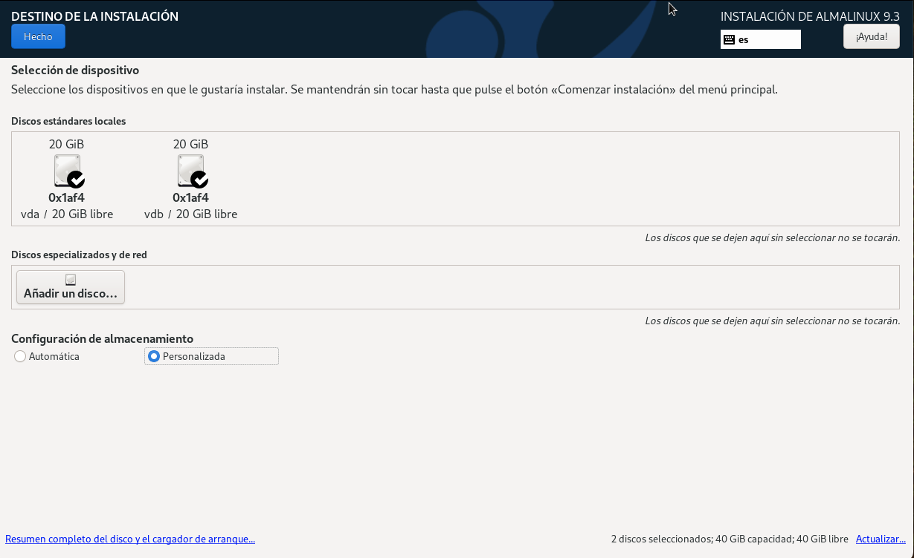
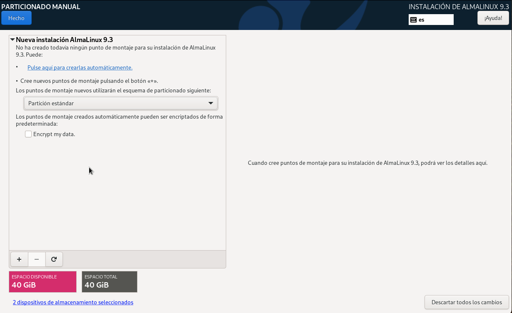
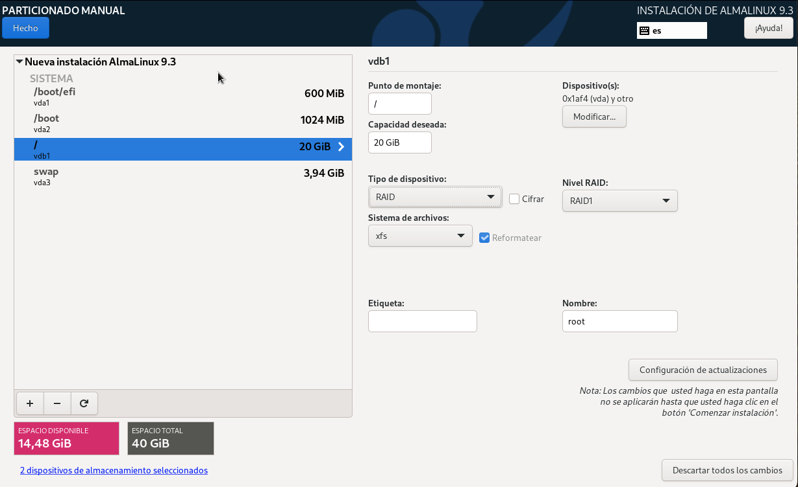
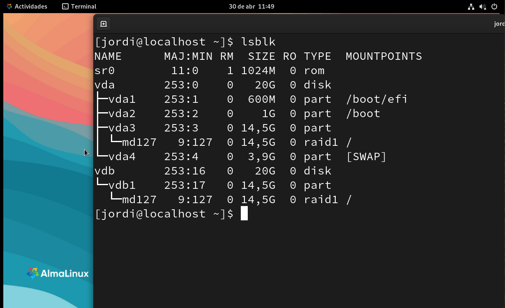

Administrant RAIDs
Instal·lació d’un RAID1 a Alma Linux
🧰 Requisits previs
- Dos discs durs virtuals de 20 GB cadascun per la configuració del RAID1.
- Imatge iso basada en Alma Linux.
- Un software de virtualització com VirtualBox, VMware, UTM o QEMU.
🎯 Objectiu
Configurar un RAID1 per la partició root (/) durant la instal·lació d’Alma Linux.
🪛 Procediment d’instal·lació
Inicieu la instal·lació d’Alma Linux fins a la pantalla de selecció de discs.
Seleccioneu els dos discs virtuals i trieu l’opció Personalitzat.
Feu clic a Fet.

Apareixerà la finestra de particions manuals:

Les particions creades seran:
/boot/efi– 600 MB
/boot– 1 GB
swap– 2 GB
/– 16,4 GB
Per configurar el RAID1, seleccioneu la partició
/i feu clic a Editar.
- Trieu RAID1 com a tipus de dispositiu.
- Feu clic a Fet → Acceptar canvis.
- Trieu RAID1 com a tipus de dispositiu.
✅ Resultat final

- Un cop finalitzada la instal·lació, el sistema es reiniciarà.
- Si tot és correcte, Alma Linux arrencarà sense problemes.
- Observeu que tenim dues particions
/(una per disc).
En cas de fallada del disc vda, el sistema no arrencarà perquè la partició /boot no està replicada en RAID. Tenim replicada només la partició /. Per tant, si el disc vda falla, el sistema no podrà accedir a la partició /boot i no podrà arrencar.
Migració de la carpeta /home a un RAID5
🧰 Requisits
En la màquina virtual anterior, podem afegir quatre discs durs virtuals de 1 GB cadascun (vdc, vdd, vde, vdf).
🎯 Objectiu
Migrar el contingut de la carpeta /home a un dispositiu RAID5 format per quatre discs virtuals.
🪛 Procediment
Creem el RAID5 amb la comanda següent:
mdadm --create --verbose /dev/md0 --level=5 --raid-devices=4 /dev/vd[c-f]Comprovem que el RAID s’ha creat correctament amb la comanda:
cat /proc/mdstatCreem un sistema de fitxers XFS en el dispositiu RAID5:
mkfs.xfs /dev/md0Muntarem el dispositiu RAID5 en un directori temporal:
mkdir /mnt/raid mount /dev/md0 /mnt/raidCopiem el contingut de la carpeta
/homeal dispositiu RAID5:cp -r /home/* /mnt/raidDesmuntem el dispositiu RAID5 del directori temporal:
umount /mnt/raidMuntarem el dispositiu RAID5 en la carpeta
/home:mount /dev/md0 /homeObtenim el UUID del dispositiu RAID5 amb la comanda:
blkid /dev/md0Fem una còpia de seguretat del fitxer
/etc/fstab:```bash
Per fer que el muntatge sigui permanent, afegim la següent línia al fitxer
/etc/fstab:UUID=<UUID> /home xfs defaults 0 0
✅ Resultat final
- El contingut de la carpeta
/homes’ha migrat correctament al dispositiu RAID5.
- El sistema utilitza ara el RAID5 per emmagatzemar les dades dels usuaris
Simulació de fallades en el RAID5
Ara simularem una fallada en un dels discs durs virtuals del RAID5. I observarem com el sistema continua funcionant sense problemes.
Crearem un usuari de prova i un fitxer de text a la seva carpeta
/home:useradd test echo "Hola món" > /home/test/hola.txt chown -R test:test /home/testSimulem la fallada d’un disc dur virtual del RAID5:
mdadm --manage /dev/md127 --fail /dev/vdcComprovem que podem accedir al fitxer de text creat anteriorment:
cat /home/test/hola.txtAra intentarem simular la fallada d’un segon disc dur virtual del RAID5:
mdadm --manage /dev/md127 --fail /dev/vddComprovem que el sistema ens avisa que no es pot fallar un segon disc perquè el RAID5 només tolera la fallada d’un disc:
mdadm: Cannot remove /dev/vdd from /dev/md0, array will be failed.
Exercicis
Es demana instal·lar un sistema AlmaLinux de forma tradicional sense RAID en un disc virtual de 20 GB (vda), creant les quatre particions habituals: /boot/efi, /boot, swap i /.
Un cop finalitzada la instal·lació:
- Afegiu dos discs durs virtuals addicionals de 20 GB cadascun (vdb i vdc).
- Migrar les particions existents a RAID1 de la següent manera:
/boot/efi→ RAID1 amb vdb1 i vdc1./boot→ RAID1 amb vdb2 i vdc2.swap→ RAID1 amb vdb3 i vdc3./→ RAID1 amb vdb4 i vdc4.
- Configureu el sistema perquè arranqui correctament des dels discs vdb i vdc.
- Un cop comprovat el correcte funcionament, elimineu el disc original vda.
- Verificar que el sistema arranca correctament després de la migració.
- Confirmar que totes les particions es troben en RAID1.
- Documentar tot el procés amb captures de pantalla, explicacions detallades i justificacions tècniques en un informe final.